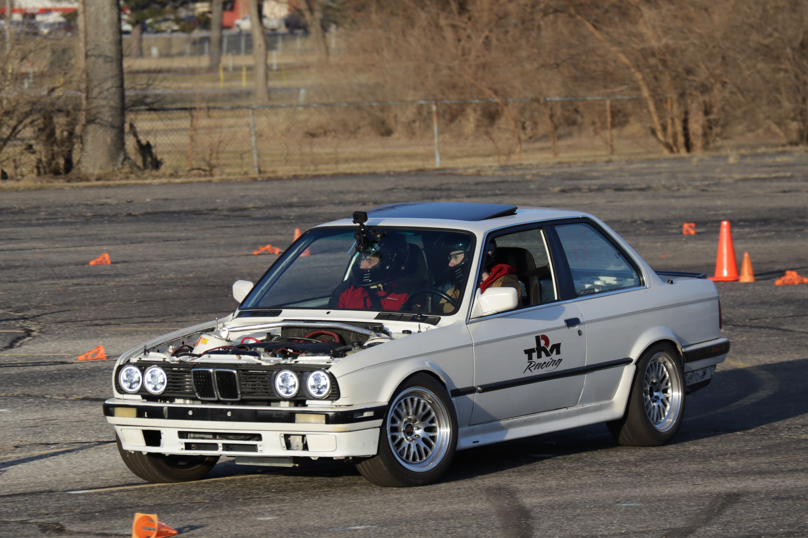
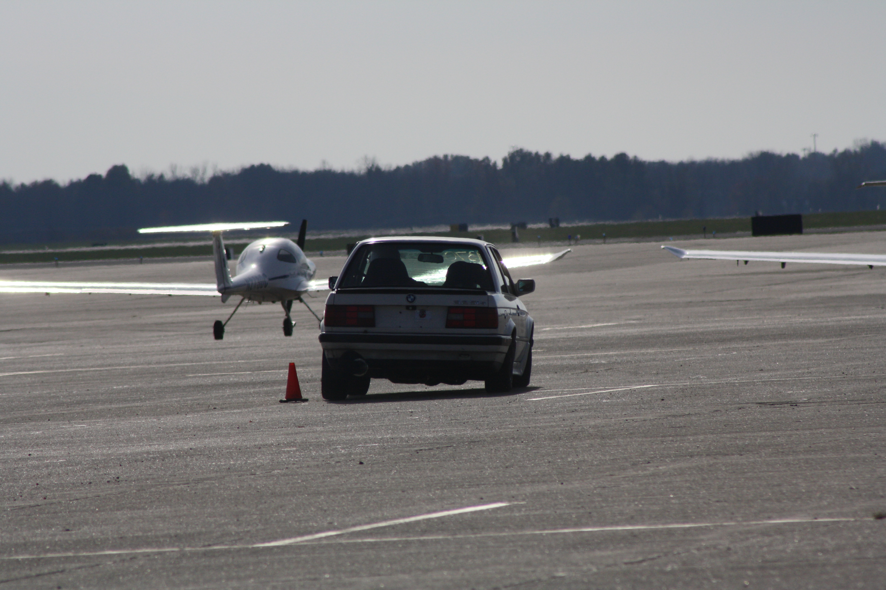
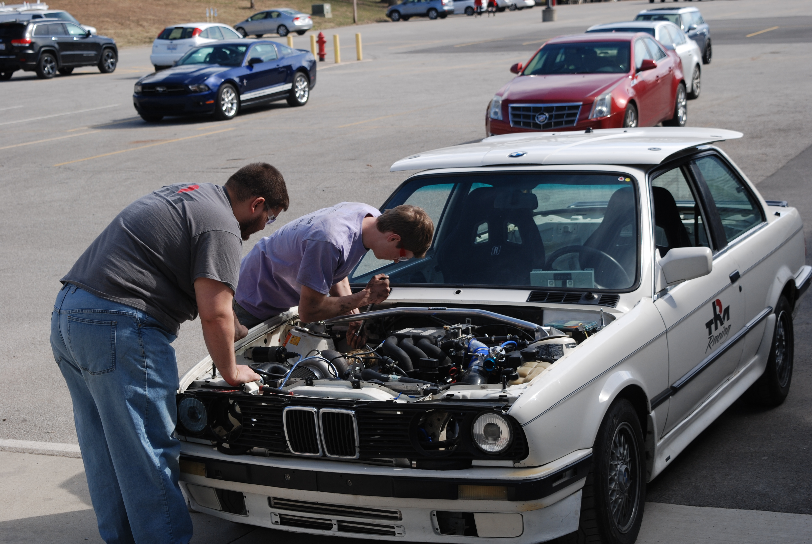

Facts and Info
Our 1988 BMW 325i started out stock as a car meant for new drivers who had little experience racing, and those of us who aren't yet comfortable in a manual. At some point over its long history with the club, the stock inline 6 got turbocharged, and unfortenately the original engine just wasn't able to handle the boost. Therefore, we decided that the best course of action was to swap it with a 5.7L LS1 out of an '02 Corvette. We've built it with a focus on autocross racing, but its primary purpose in the team is still to be a reliable and beginner friendly vehicle.